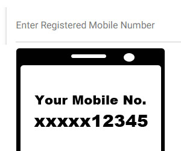
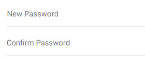

1. Click on the Register Button show in the top of the Page. After clicking the button, Form will be open
2. First enter the Bhamashah Acknowledgment Id and registered Mobile number inside the text box.

3. Enter the password for the Account inside the text box.
4. Enter the confirm password for the Account inside the text box.
5. Click to Register Button.